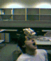
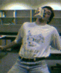

Schwing-ball was developed by the CIIPS PhD students as an alternative to doing work. Its ancestry comes from the game referred to as `hackey-sack' or `foot-bag', but schwing-ball requires considerably more skill to play.
The schwing-ball itself is nothing more than an empty, 600ml iced-coffee carton. Prior to using the carton, it must be correctly `cured'. This process involves drinking the iced coffee, folding the lid in, and sitting the carton on a shelf for several days. This allows the residual milk inside to ferment, providing an extra dimension to play.
A freshly cured schwing-ball tends to be quite rigid. Correct ettiquette requires that such a ball is to be referred to as a `virgin'. Hence the popular phrase `I will just drink this virgin dry and then we can kick it around a bit'.
Conversely, a well-used schwing-ball is called an `old-master' (and is referred to by one interloper as a `whore').
The name `schwing-ball' itself is clouded in mystery, and its true origins may never be known. Popular myth indicates it arose from the habit of students indicating their desire to play by proudly displaying a virginal carton and yelling out `Sssssschwiiiing!!!'.
Play itself begins with the `feed'. The student with the ball launches it towards the other students, using any of the legal moves. Legal moves constitute hitting the ball with any part of the body except for the lower arms, the back of the knee or the internal organs. The ball is in play until it lands on the ground.
Over the year, students developed their own moves. Some of the more popular ones are listed below:
|  The `captain-headbutt' is a move whereby the ball is bounced off the players head, no matter where it may be, and regardless of his personal safety. |  The `mullet' involves kicking the ball into ones face at extreme velocities, to give the appearance that this was done intentionally. |
| The `groinal' is executed by hitting the ball with a pelvic-thrust. It is usually performed after the ball has been kicked violently into a players nether-regions by another participant. | Safety Note: If the schwing-ball should ever rupture, evacuate the premises immediately to avoid contamination. |
|---|
The ultimate aim of playing schwing-ball is to satisfy any of the following criteria:-